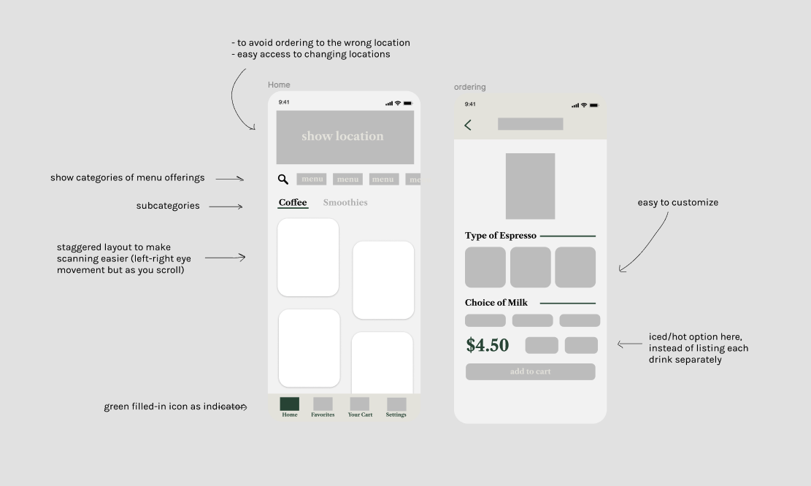
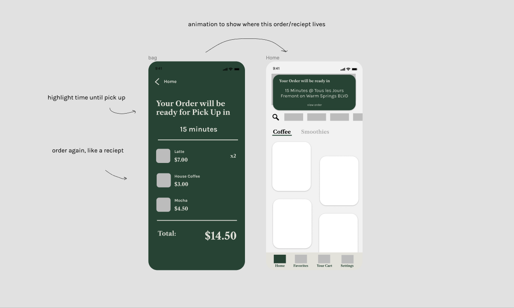
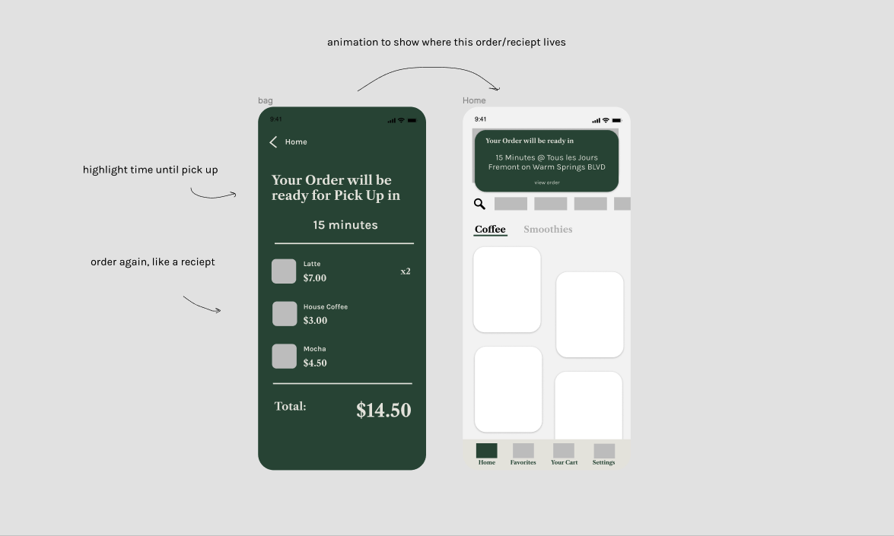

Since the COVID-19 pandemic, I've missed going to local cafes like TLJ. As a self-proclaimed cafe enthusiast, I decided to design a mobile app for Tous les Jours as a personal project.
Note: Any research was based on my experience there, conversations with old coworkers, or what I could find online. Product pictures are from the Tous les Jours website.
Due to the decrease in business, TLJ is typically unable to sell all breads and pastries made on a given day; the conditions of the pandemic make it less feasible to donate food as well, which contributes to food waste. However, adhering to physical distancing guidelines and protecting both employees and customers is important. Sadly, if the dip continues, the bakery will be forced to close and fire its employees.
- Ordering something we no longer made (our menu was outdated)
- Coming in and seeing what they wanted was sold out
- During the pandemic, going outside even with a mask can feel risky, which prevents many from going to TLJ
- No means for digital tips, only a physical tip jar
- Food waste from unsold items
- During the pandemic the biggest issues are ensuring safety and generating revenue
- Pre-Ordering - By allowing customers to order ahead of time, the amount of time a customer spends in the store is decreased, limiting contact for both customers and employees.
- Reflect Inventory - Some customers are looking to buy specific things. If out-of-stock items were reflected in the app, customers would not have to make an unnecessary trip. By preventing unnecessary trips, TLJ could prevent customer dissatisfaction too.
- Convenience - Increased convenience and safety could bring in more customers.

 



Compact, but easily navigable menu with pictures to parallel the experience of seeing baked goods in-store and display information more efficiently than competitors.
Layout of menus is staggered to make it easier for people to scan through using a rigid left-right downward motion.
Favorites page for regulars who always order the same things.
Removed bottom dashboard (as seen in previous screen) so users are focused on the UI for ordering.
Easy access to the cart by swiping up so users would not have to abandon this order to navigate to their cart, increasing chances of sale.
Option to choose iced/hot because in real life, often people would order their drinks without specifying iced/hot and we'd have to ask for clarification.

Presented all crucial information on the confirmation: what was ordered, prices, payment method used, and time until pickup.

Made clear how long an order is taking and where to view your order.
To make sure users notice, I would design an animation showing where you can view your most recent order once you exited the order confirmation.
But a main goal of mine for this sprint was to create a way to help TLJ generate enough business to survive through the pandemic. This required me to approach my screens from a business standpoint as well. Features like Favorites to make ordering faster and design decisions to prevent user errors encourages more sales.
I think in many ways both a business and customer approach compliment each other because a happy customer can mean more revenue, but in a future iteration I would like to consider how a rewards program, for example, fits into the business model. Something I think I could've put more consideration into this time around would be clear directions for curbside pickup/takeout to further ensure safety during the pandemic and laying down a strong foundation so the app could still be valuable in a post-pandemic world.
- Contextual actions within the cart (adjusting quantity, deleting, favoriting?) — to improve ux
- Option to add a tip — considering secondary users
- Option to input how you would like your order to be packed — to improve ux and possibly, encourage sustainability
- Consider business side of this app (for employees and TLJ) — considering secondary users
- An integrated rewards program experience — to improve ux and possibly encourage sales